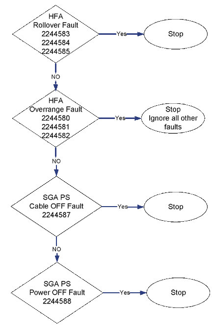
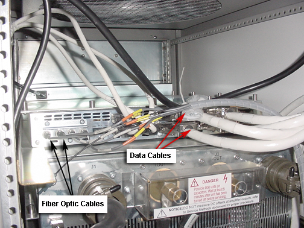
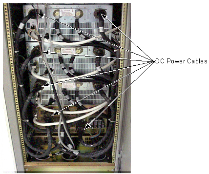
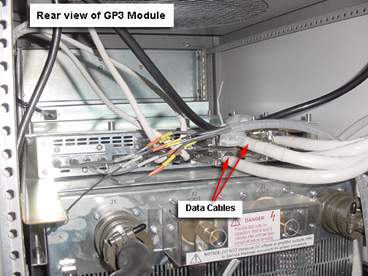
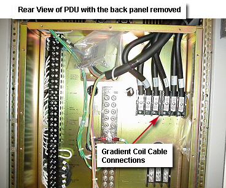
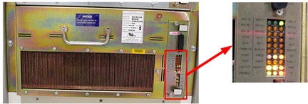

GE Exclusive Use Only
Direction 5440000, Rev# 5
Signa HDxt Service Methods
Module Version 3.0, Version Date 4/2/09
GE Exclusive Use Only |
The following is a troubleshooting guide for the High Fidelity Driver (HFD) Gradient Cabinet. It is broken down by fault trees and error messages. The flowcharts that follow are based on the faults and error messages. Each fault is listed in a diamond-shaped box with the related error message number. When a fault occurs, follow the instructions provided in the message contained in the elliptical. A more detailed list of the error messages with symptom and recommended actions is also provided.
| ||||
| If any gradient cables are swapped between different axes or polarities for troubleshooting, perform the Geometry Verification procedure to verify that gradient cables are returned to their original position. | ||||
The flowchart in Illustration 1 lists the more probable faults. Check the Error Message log for these faults. Follow the directions provided in the error message for any received errors. Refer to Table 1 for the detailed error message and recommended actions.
Illustration 1: HFA and SGA PS Limited Fault Tree

The following flowchart lists the bulk of the faults for the HFD Cabinet. The faults are grouped by color/shading in the order of priority. The first grouping lists power/cabling errors with the methods to clear faults. The second grouping (middle section) lists operational errors. Each is listed by fault and the error message number. Follow the directions in the error code. The last grouping (current distortion) is the lowest priority. Refer toTable 1 for the detailed error message and recommended actions.
Media File 1: HFD Fault Tree

Table 1: Error Messages and Recommended Actions
| Fault and Error Number | Symptom | Action(s) |
|---|---|---|
| HFA_Failed_Ready 2244570 | Gradient Amplifier _ Axis failed to go to Ready when commanded. |
|
| HFA_Cable_Off_Fault 2244571 | GP3 reported a Gradient Amplifier _ Axis cable off fault. |
|
| HFA_Power_Off_Fault 2244572 | GP3 reported a Gradient Amplifier _ Axis power off. |
|
| HFA_WF_PSUV_Fault 2244573 AND 2244574 | GP3 reported a Gradient Amplifier _ Axis internal wiring fault and internal power supply under voltage. |
|
| HFA_OC_Fault 2244575 | GP3 reported a Gradient Amplifier _ Axis over current fault. |
|
| HFA_OV_Fault 2244576 | GP3 reported a Gradient Amplifier _ Axis over voltage fault. |
|
| HFA_UV_Fault 2244577 | GP3 reported a Gradient Amplifier _ Axis under voltage fault. |
|
| HFA_IDIST_Fault 2244578 | GP3 reported a Gradient Amplifier _ Axis current distortion fault. |
|
| HFA_OT_Fault 2244579 | GP3 reported a Gradient Amplifier _ Axis over temp fault. |
|
| X_HFA_OVRANGE_Fault 2250080 | X Axis Gradient Data Over Range Occurred: GP3 detected an error in the incoming high speed data from SCP. | Usually a PSD problem; ignore all other faults except Rollover 2244582. |
| Y_HFA_OVRANGE_Fault 2250081 | Y Axis Gradient Data Over Range Occurred: GP3 detected an error in the incoming high speed data from the SCP. | Usually a PSD problem; ignore all other faults except Rollover 2244582. |
| Z_HFA_OVRANGE_Fault 2250082 | Z Axis Gradient Data Over Range Occurred: GP3 detected an error in the incoming high speed data from the SCP. | Usually a PSD problem; ignore all other faults except Rollover 2244582. |
| X_HFA_RollOver_Fault 2244583 | X Axis Gradient Data Rollover Occurred: Application of digital DC Offset compensation caused the gradient data to roll over. |
|
| Y_HFA_RollOver_Fault 2244584 | Y Axis Gradient Data Rollover Occurred: Application of digital DC Offset compensation caused the gradient data to roll over. |
|
| Z_HFA_RollOver_Fault 2244585 | Z Axis Gradient Data Rollover Occurred: Application of digital DC Offset compensation caused the gradient data to roll over. |
|
| SGAPS_Ready_Fault 2244586 | SGA-PS failed to go to Ready when commanded or came out of Ready. |
|
| SGAPS_Cable_Off_Fault 2244587 | GP3 reported a SGA-PS cable off fault. |
|
| SGAPS_Power_Off_Fault 2244588 | GP3 reported a SGA-PS power off. |
|
| SGAPS_WF_PSUV_Fault 2244589 | GP3 reported a SGA-PS internal wiring fault or internal power supply under voltage. |
|
| SGAPS_OT_Fault 2244590 | GP3 reported a SGA-PS over temp fault. |
|
| SGAPS_OC_Fault 2244591 | GP3 reported a SGA-PS over current fault. |
|
| SGAPS_OV_Fault 2244592 | GP3 reported a SGA-PS over voltage fault. |
|
| SGAPS_UV_Fault 2244593 | GP3 reported a SGA-PS under voltage fault. |
|
| HFA_Failed_Standby 2244594 | Gradient Amplifier _ Axis failed to go to Standby when commanded. |
|
| X_Failed_Recovery 2244595 | X Axis gradient error detected; recovery in progress. | Ignore; recovery in progress |
| Y_Failed_Recovery 2244596 | Y Axis gradient error detected; recovery in progress. | Ignore; recovery in progress |
| Z_Failed_Recovery 2244597 | Z Axis gradient error detected; recovery in progress. | Ignore; recovery in progress |
| Recovery_Done 2244598 | Gradient system on the _ Axis recovered successfully. There are no faults at the present time. | Ignore; recovery in progress |
| Current Driver Tests 2245044 | GP3 reported an X Axis Gradient Amplifier internal wiring or internal power supply under voltage fault. |
|
Table 2 numerically lists the software faults that may occur.
Table 2: Software Faults
| Fault and Error Number | Symptom | Action(s) |
|---|---|---|
| Invalid Update Error 2250000 | Internal GP3 Software Error: Invalid selection for an update mode. |
|
| Undef_Interrupt 2244501 | Internal GP3 Software Error. |
|
| Invalid_TP 2244502 | Internal GP3 Software Error. |
|
| Undef_MDS_OPCODE 2250030 | Internal GP3 Software Error: GP3 received an undefined op code from a SCP MDS packet. |
|
| Invalid_Axis 2244540 | Internal GP3 Software Error: Number of axis is not between Value and Value. |
|
| Bad_PS_Level 2250041 | Internal GP3 Software Error: Invalid selection for Gradient
power supply level. SCP specified an undefined value in a MDS packet. |
|
| No_PS_Level_Stdby 2250042 | SCP attempted to command the _ Gradient Axis to Standby before sending a GP_CONFIG packet to the GP3. | Check SCP. |
| No_PS_Level_Rdy 2244543 | SCP attempted to command the _ gradient axis to Ready before sending a GP_CONFIG packet to the GP3. | Check SCP. |
| ADC Error 2244627 | Internal GP3 Software Error: Unavailable signal for selection on ADC Multiplexor _. | Write CQA. |
Table 3 provides the hardware error along with a symptom and recommended action.
Table 3: Hardware Errors
| Fault and Error Number | Symptom | Action(s) |
|---|---|---|
| GRAM_Tune_Verify 2244544 | GP3 was unsuccessful loading/verifying GP3 digital tuning values for the _ Axis. | Replace GP3. |
| Framing Error 2250108 | Hardware Error: Gradient data framing error. The GP3 reported a data framing error. |
|
| Clock Stop Error 2250109 | Hardware Error: No Gradient Clock. A gradient clock stop occurred; GP3 stopped receiving the gradient clock from the Systems Cabinet. |
|
Refer to the Gradient Hardware Isolation Flowchart shown in Media File 2. All sections listed below address the flowchart.
Media File 2: Gradient Hardware Isolation Flowchart

To isolate problems in a particular axis of the GP3, swap the suspect axis fiber cable with another axis. Next, swap the corresponding data cables at the GP3 or at the HFA. (See Illustration 2 for GP3 cables.)
Illustration 2: GP3 Cables

To isolate problems caused by a particular power supply output, swap one or both of the cables of the suspect axis with the cable(s) of another axis. All six outputs are identical and will work on either connector of any HFA/Gradient Amplifier. Do not move data or fiber cables for this test. (See Illustration 3 for DC power cables.)
Illustration 3: DC Power Cables

To isolate problems in a particular Gradient Amplifier (HFA) , swap the Gradient Coil cables of the suspect axis with another axis on the terminal board at the back of the PDU, and swap the corresponding data cables at the GP3 or at the HFA. If this indicates a bad amplifier, try swapping the control boards to verify. (See Illustration 4 and Illustration 5 for the cable locations.)
Illustration 4: Data and Gradient Coil Cable Locations in Gradient Cabinet

Illustration 5: Gradient Coil Cable Connections

Power Supply LEDs also indicate Gradient Amplifier faults. Refer to Gradient Amplifier-Power Supply LEDs for more information.
Illustration 6: SGA-PS LED Location

Table 4 lists the faults that may occur.
Table 4: PDU Fault Symptoms and Possible Causes
| Symptom | Possible Cause(s) |
| Bus OV, Bus UV and PSUV faults in power supply |
|
| Power Supply IGBT failure, PSUV faults | Unbalanced voltages or missing phases indicate a feeder, PDU transformer or internal wiring problem. |
| E-off not working, or E-stop contactor will not pick up |
|
| NOTE: | MR recommends using a 160 kVA Uninterrupted Power Supply (UPS) from Powerware for the system. Any other type of UPS or line regulator can cause PDU or Power Supply problems. |